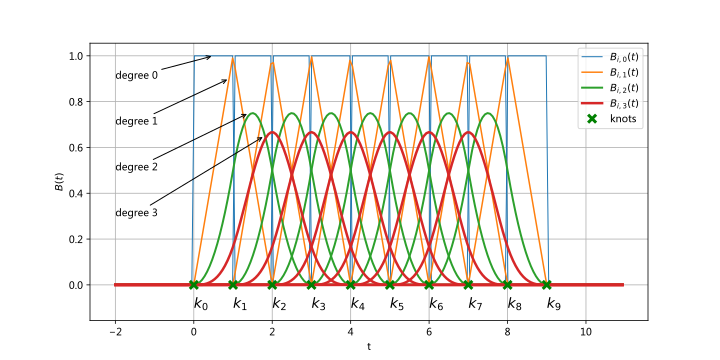
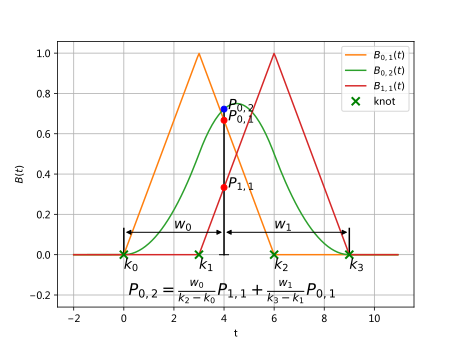
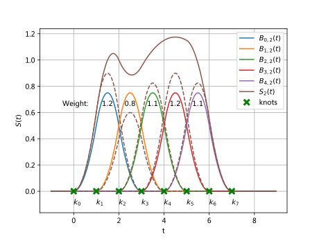

B-Spline（=Basic Spline）
需求
- 需要利用样条函数拟合时相连续的数据，e.g. IMU data。
- 利用样条函数拟合散点，做表面拟合，e.g. 构建mesh或者其他光滑的表面。
- 路径规划中使用样条线对A*算法进行优化，得到更加平滑的路径。
- 多传感器融合任务中，e.g.多传感器标定时，为了内插任意时刻的状态，实现多传感器的时间对齐，使用B-spline做内插。
相关术语123
大白话来说，B样条曲线其实就是分段多项式，每个分段内的函数又由每个分段内多个子函数（基函数）叠加而成，不同基函数之间有不同的占比。处于高阶的基函数又由相邻分段节点处的低阶基函数得到，由此形成一个不断传递（递归）的过程，直到全部的都计算完毕。B-spline曲线就是每个控制点乘以自己对应的权重系数函数（基函数），然后再求和，控制点是后期指定的，权重函数是预先定义好的，只跟阶数有关，与控制点无关。
| Terminologies | Notation | Explanation |
|---|---|---|
| Independent Variable | \(t\) | In state estimation, the independent variable is time \(t\). \(t\) 应该包含\(k\)的范围的实数，而\(k\)一定是正整数 |
| Order（阶） | \(n\) | Same as the order of final polynomial, the highest exponent. For instance, \(f(x) = 3x^3\) has an order of 4. 样条曲线的阶是样条曲线的次数加一。样条曲线的阶越高，控制点越多。二次样条的阶数是三，样条曲线段与三个控制点决定；三次样条的阶数是四，样条曲线段与四个控制点决定。 |
| Degree（次） | \(p\) | Same as the degree of final polynomial, the highest exponent. For instance, \(f(x) = 3x^3\) has an degree of 3. 所构成样条曲线的一段光滑参数曲线段，由控制多边形的相邻连续的几段折线段决定，就是几次样条，最常用的就是二次和三次样条。二次样条的某一曲线段只与相应的两段折线段，三个控制多边形顶点有关，改变其中一个顶点，将影响三段样条曲线段。同样的，对三次样条，某一曲线段由相应的三段折线段，四个控制点决定。 |
| Segment Index | \(i\) | A B-Spline is combined with piecewise polynomial, each piece is a segment. 样条曲线是由一组逼近控制多边形的光滑参数曲线段构成，这些曲线段就是样条曲线段。 |
| Knot Vector | \(\mathbf{k}\) | \(k_0 \leq k_1 \leq ... \leq k_{m-1}\), The connect knot, or joint, between every piece of polynomial segment. ==Knot vector lies in the axis of independent variable \(t\)==. knot是被提前设计好的，一般被设计成为一组非递减的正整数。 |
| Basis Function | \(B_{i,p}(t)\) | In the expression, \(i\) is the index of polynomial segment, \(p\) is the degree of the basis function. |
| Control Points（数值） | \(C_i\) | Also named as ==coefficients==. Control points are used to describe
the weight of each piece of polynomial segment.
|
直观图例
下图很直观的表达了B样条曲线的形成过程。注意这里的示意图都是按照Cox-de Boor recursion formula来实现的，因此零次样条线表现出一个反脉冲的形式。
以一般的基函数如\(B_{1,0}(t)\)所示(蓝色)为例，为0次1阶基函数在第一段（属于[0,1)区间）的表达，基函数只有在\(K_0,K_1\)处的相应为0.0，其他均为1.0。

Figure.1 Iterative composition of basis functions. Each segment of basis function \(B_{i,p}(t)\) is composed by its adjacent basis functions in lower degree, which are \(B_{i,p-1}(t)\) and \(B_{i + 1,p-1}(t)\). While basis functions in degree 0 are ==unit square wave signals==. py_code

Figure.2 The point \(P_{0,2}\) of basis function \(B_{0,2}(t)\) (order3, degree 2 and segment 0), is evaluated by the weighted combination of \(B_{0,1}(t)\) and \(B_{1,1}(t)\). The weight of each component is defined by the distance between \(P_{0,2}\) and its correspondent knot points (or equivalently linear interpolation). As shown in the figure, the knot vector is \([0, 3, 6, 9]^T\). py_code

Figure.3 A B-Spline with degree 2, named \(S_2(t)\) is generated by weighted combinations of all its basis functions. The weight comes from control points, which are \([1.2, 0.8, 1.1, 1.2, 1.1]\) in the figure. The brown dash lines show how control point affect the weight of basis function, these lines finally compose the brown spline. The knot vector is \([0, 1, 2, 3, 4, 5, 6, 7]^T\). B-Spline
严格数学定义Cox-de Boor recursion formula
中文表达
TODO
英文表达
Let \(\mathbf{K}\) be a set of \(m\) non-decreasing numbers, \(k_0 \leq k_1 \leq ... \leq k_{m-1}\). The \(k_i\)s are called knot vector, and the ==half-open interval== [\(k_i,k_{i+1}\)) the \(i\)-th knot span. Note that since some \(k_i\)s may be equal, some knot spans (knot span=\(k_i \sim k_{i+1}\)) may not exist. If the knots are ==equally spaced== (i.e. \(k_{i+1}-k_i\) is a constant for \((0\leq i \leq m-1)\)), the knot vector or the knot sequence is said ==uniform==; otherwise, it is non-uniform. The \(i\)-th B-spline basis function of degree \(p\), written as \(B_{i,p}(t)\), is defined recursively as follows: \[ \begin{align} \label{Cox-de Boor Recursion Formula} B_{i,0}(t)&= \left\{ \begin{array}{cc} 1 & if \quad t_i \leq t \leq t_{i+1} \\\\ 0 & otherwise \end{array} \right. \\ B_{i,p}(t)&=\frac{t-t_i}{t_{i+p}-t_i}B_{i,p-1}(t)+\frac{t_{i+p+1}-t}{t_{i+p+1}-t_{i+1}}B_{i+1,p-1}(t) \end{align} \]
where If the degree is zero (i.e., \(p\) = 0), these basis functions are all step functions \(\ref{Cox-de Boor Recursion Formula}\). Basis function \(B_{i,0}(t)\) is 1 if \(t\) in the \(i\)-th knot span [\(k_i,k_{i+1}\)).
With control points: \[ \begin{align} \label{Cox-de Boor Recursion Formula w gcp} N(t) = \Sigma_{i=0}^{n} P_{i}*B_{i,p}(t) \end{align} \]
推导
推导过程详见3，通过三角形法则可以不断计算出更高次的基函数的值。虽然比较麻烦，但是思路挺简单的。
广义矩阵表示
文章4使用Toeplitz 矩阵将B-spline和Bezier曲线表示为广义矩阵形式。这种表示形式的好处除了更加高效之外，还方便计算导数，方便次数增加和减少任务。
JingeTU对这个文章做了进一步的介绍。但我依然看不懂...
特性（注意点）
样条曲线是连续的，而且曲率变化均匀，B-spline在节点处一阶、二阶导数连续，Cubic Spline在三阶处的导数也连续
the domain is subdivided by knots. 整个分布空间定义域所处的domain被knot分割开
basis functions are not non-zero on the entire interval. In fact, each B-spline basis function is non-zero on a few adjacent subintervals and, as a result, B-spline basis functions are quite "local" (local support). B-spline的基函数在局部subintervals是非零的，并不是一直有值，也就是k的定义域在1阶0次基函数中是在局部定义域内响应的
\(u_i\) is a multiple knot of multiplicity k, written as \(u_i(k)\). knot 是可以重复存在的，knot vector是全部knot组成的，knot其实是预先设定好的，在既定位置上存在的点。
Basic function \(B_{i,p}(t)\) is non-zero on [\(k_i,k_{i+p+1}\)). Or, equivalently, \(B_{i,p}(t)\) is non-zero on \(p+1\) knot spans. 想要找到高次基函数所对应的非零区间，可以用三角形法则反向查找，所对应的区间加起来就是其所对应的非零区间3，随着阶数的升高，k对应的定义域是在不断变化的，\(k \in \left[ k_i, k_{i+p+1} \right)\).
On any knot span [\(k_i,k_{i+1}\)), at most \(p+1\) degree \(p\) basis functions are non-zero. 可以根据subinterval区间找到哪些高次基函数是非零的
给定knot vector \(\mathbf{K}\)和阶数\(n\)，每段函数在knot节点处的连续性等于\(C^{n-2}\)
生成B-Spline时，所需knots的数量m和阶数n,以及控制点的数量有关。即
m=n+1+控制点数量B-Spline 分为opened 和clamped两种，区别在于是否是B-Spline通过起始点和终止点。前者否，后者是
可视化
- 一个直观的基于Web的Spline可视化界面。手动选择knot可直接显示Spline，可以移动knot。
- C++版基于OpenGL实现的Spline可视化代码，但是没测试过。
- 医学图像领域基于TPS实现图片编辑的vs工程。
- A tool for interactive interpolation of splines. Select any points and visualize how different splines are modelled. 对比不同曲线之间的差异。带界面，推荐。
- MATLAB版本的绘制B-spline曲线和表面的。对于MATLAB用户来说非常好用。下面是两个实例结果，非常直观形象。就是拟合大数据的时候会比较慢。不过作为示意图够使用了。

使用不同次数的基函数对数据进行最小二乘拟合的结果

knot非均匀分布下分段多边形函数以及对应的B-Spline函数
- 基于VTK实现的Spline可视化，包含TPS等样条曲线。
- pySpline produces B-spline curves, surfaces, and volumes一个基于python的，但是目前没有环境，没有测试。
References
- https://xiaoxingchen.github.io/2020/03/02/bspline_in_so3/ ↩︎
- 样条曲线的次数和阶数分别是什么意思，能举例说明一下吗？ - potato的回答 - 知乎 https://www.zhihu.com/question/43028324/answer/399976433 ↩︎
- https://pages.mtu.edu/~shene/COURSES/cs3621/NOTES/spline/B-spline/bspline-basis.html ↩︎
- Qin K. General matrix representations for B-splines[C]//Proceedings Pacific Graphics' 98. Sixth Pacific Conference on Computer Graphics and Applications (Cat. No. 98EX208). IEEE, 1998: 37-43. ↩︎